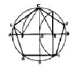
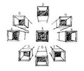
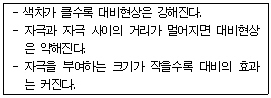

컴퓨터그래픽스운용기능사 (2007-07-15 기출문제)
1과목: 산업디자인 일반
1. 아이디어 발상 방법의 하나인 브레인스토밍에 관한 잘못된 설명은?
- 집단회의에서 참가자의 연쇄반응에 의한 발상기법이다.
- 전형적인 자유 연상법이다.
- 하나의 새로운 아이디어만을 구하는데 목적이 있다.
- 일단 제출된 아이디어는 비판하지 않는다.
(정답률: 92%)

2. 다음 중 신문광고의 광고란(廣告欄) 광고에 속하지 않는 것은?
- 상품광고
- 기업광고
- 영업물광고
- 돌출광고
(정답률: 80%)
3. 인테리어디자인에서 바닥의 마감재료 중 가장 부적합한 것은?
- 석재
- 목재
- 아스타일
- 석고보드
(정답률: 82%)
4. 공간배치를 위한 시스템 가구 사용시의 특징 설명으로 틀린 것은?
- 모듈화 되어 다양한 배치가 가능하다.
- 기능에 따라 다양하게 이동성과 융통성이 크다.
- 공간 성격의 변화에 대한 이동성과 융통성이 크다.
- 단일 공간을 상이한 기능의 공간으로 구획, 분할이 용이하지 않다.
(정답률: 83%)
5. 편집디자인 작업과정 중 인쇄소에 원고를 넘기기에 앞서 문자 원고, 사진, 일러스트레이션 등의 지정단계는?
- 기획 회의 단계
- 취재, 자료 수집 단계
- 편집, 레이아웃 단계
- 인쇄 및 검품, 납품 단계
(정답률: 89%)
6. 1944년 윌리엄 고든에 의해 개발된 아이디어 창출법으로 은유법과 유추법을 사용하여 창조적인 아이디어를 끌어내는 방법은?
- 입출력법
- 체크리스트법
- 시네틱스
- 매니지먼트
(정답률: 79%)
7. 고대국가의 건축에서 나타난 특징으로 볼 수 없는 것은?
- 거대함에서 비롯되는 기념비적 특성이 있다.
- 아치와 돔 양식을 주로 도입하였다.
- 기하학적 비례의 원리를 적용 시켰다.
- 강력한 통치 국가가 존재한다는 것을 과시하는 건축물이다.
(정답률: 67%)
8. 환경디자인의 의미와 거리가 먼 것은?
- 제품설계
- 조경설계
- 도시계획
- 실내설계
(정답률: 78%)
9. 다음 중 포장 디자인의 기능과 가장 거리가 먼 것은?
- 보존성
- 편리성
- 상품성
- 기념비성
(정답률: 89%)
10. 앙리 반 데 벨데에 의해 사용된 곡선을 중심으로 장식적 양식과 화려한 색채를 사용하던 시기에 전 유럽을 풍미했던 양식은?
- 미술공예운동(Art and Crafts Movement)
- 아르누보(Art Nouveau)
- 바우하우스(BauHaus)
- 시카고파(Chicago school)
(정답률: 84%)
11. 다음 중 디스플레이의 조건으로만 성립된 것은?
- 대상물, 관객, 장소, 시기
- 관객, 교통, 공간, 도면
- 장소, 공간, 도면, 색상
- 공간, 도면, 건물, 관객
(정답률: 65%)
12. 디자인의 요소에 해당 되지 않는 것은?
- 형
- 빛과 운동
- 개성
- 색채
(정답률: 68%)
13. 게슈탈트(gestalt) 요인이 아닌 것은?
- 시각성의 요인
- 유사성의 요인
- 폐쇄성의 요인
- 근접성의 요인
(정답률: 76%)
14. 소비자 행동에 영향을 미치는 요인과 거리가 먼 것은?
- 문화적 요인
- 사회적요인
- 개인적 요인
- 도덕적 요인
(정답률: 83%)
15. 서로 다른 부분의 조합에 의하여 생기는 것으로, 시각상 힘의 강약에 의한 형의 감정 효과인 것은?
- 통일
- 리듬
- 반복
- 대비
(정답률: 66%)
16. 다음 중 이념적 형태에 해당하는 것은?
- 자연형태
- 인위형태
- 현실형태
- 순수형태
(정답률: 72%)
17. 기업의 제품 경쟁에서 판정자 역할을 하는 사람은?
- 생산자
- 소비자
- 디자이너
- 기업주
(정답률: 92%)
18. 랜더링에 대한 설명이 잘못 된 것은?
- 완성될 제품에 대한 예상도이다.
- 실물이 가진 형태, 색채, 재질감을 충실히 표현한다.
- 제시용 랜더링이란 부품의 구조와 기능을 설명할 목적으로 쓰인다.
- 최종 디자인을 결정하려는 표현 전달의 단계이다.
(정답률: 69%)
19. 다음 중 구매시점 광고를 의미하는 용어는?
- P.O.P
- Package
- DM
- PR
(정답률: 86%)
20. 실용성 또는 기능성과 관련되는 디자인의 조건은?
- 독창성
- 합목적성
- 심미성
- 경제성
(정답률: 88%)
2과목: 색채 및 도법
21. 위에서 내려다보는 조감도의 느낌을 주는 투시도법은?
- 1점 투시
- 2점 투시
- 3점 투시
- 등각법
(정답률: 75%)
22. 투상도의 제3각법에 대한 설명으로 잘못된 것은?
- 기준이 눈으로부터 눈, 화면, 물체의 순서로 되어 있다.
- 미국에서 발달하여 빠른 속도로 보급 되었다.
- 한국산업규격의 제도 통칙에 이를 적용하였다.
- 유럽에서 발달하여 독일을 거쳐 우리나라에 보급되었다.
(정답률: 75%)
23. 어두워지면 가장 먼저 사라져서 보이지 않는 색은?
- 노랑
- 빨강
- 녹색
- 보라
(정답률: 79%)
24. 다음 중 채도가 가장 낮은 영역을 나타내는 수식어는?
- 선명한
- 흐린
- 밝은
- 진한
(정답률: 88%)
25. 다음 도형은 무엇을 구하기 위한 과정인가 ?

- 원주에 근사한 직선 구하기
- 원에 내접하는 정오각형 그리기
- 원에 내접하는 반원형 그리기
- 한 변이 주어진 정오각형 그리기
(정답률: 89%)
26. 다음 척도 중 축척에 해당되는 것은?
- 5/1
- 2/1
- 1/1
- 1/2
(정답률: 82%)
27. 배색의 효과 중 채도와 면적 간의 관계에 있어, 균형이 맞고 수수한 느낌이 들도록 배색하는 방법은?
- 저채도의 색을 좁은 면적에, 고채도의 색을 넓은 면적에 사용한다.
- 저채도의 색과 고채도의 색을 같은 크기의 면적에 사용한다.
- 저채도의 색을 넓은 면적에, 고채도의 색을 좁은 면적에 사용한다.
- 저채도의 색은 왼쪽에, 고채도의 색은 오른쪽에 사용한다.
(정답률: 73%)
28. 다음 색 중 배경색이 남색일 때, 진출성이 가장 강한 것은?
- 노랑
- 자주
- 보라
- 청록
(정답률: 85%)
29. 다음 투시도에서 암시도(시점이 하단에 있는 경우)는?

- 2, 3, 9
- 4, 8, 1
- 5, 6, 7
- 4, 5, 6
(정답률: 71%)
30. 구멍의 치수, 가공법 또는 품번 등을 기입할 때 쓰이는 선은?
- 화살표
- 지시선
- 치수선
- 치수보조선
(정답률: 52%)
31. 전개가 복잡한 조립도에서 많이 사용되는 단면 도법은?(오류 신고가 접수된 문제입니다. 반드시 정답과 해설을 확인하시기 바랍니다.)
- 온 단면도(전 단면도)
- 한쪽 단면도(반 단면도)
- 부분 단면도
- 치수보조선
(정답률: 58%)
32. 다음 중 3개의 축선이 서로 만나서 이루는 세 각들 중에서 두 각을 같게, 나머지 한 각은 다르게 그리는 투상도는?
- 등각투상도
- 부등각투상도
- 사투상도
- 전개도
(정답률: 64%)
33. 주위에 있는 색의 영향으로 인접색에 가깝게 보이는 현상은?
- 색의 동화 현상
- 연변 대비 현상
- 보색 잔상 현상
- 등색 잔상 현상
(정답률: 77%)
34. 어떤 특정색채가 주변 색채의 영향으로 본래의 색과는 다른 색채로 지각되는 경우를 색채의 대비효과라 한다. 다음과 같은 조건에서 지각되는 대비는?

- 계시대비
- 동시대비
- 색상대비
- 명도대비
(정답률: 52%)
35. 오스트발트 표색계의 색채 개념은?
- Red + Green + Blue = 100%
- White + Black + Color = 100%
- Red + Yellow + Blue = 100%
- White + Blue + Green = 100%
(정답률: 67%)
36. 다음 색의 3속성에 대한 설명 중 옳은 것은?
- 두 색 중에서 빛의 반사율이 높은 쪽이 밝은 색이다.
- 색의 강약, 즉 포화도를 명도라고 한다.
- 감각에 따라 식별되는 색의 종류를 채도라 한다.
- 그레이 스케일(Gray scale)은 채도의 기준 척도로 사용된다.
(정답률: 58%)
37. 색채를 통한 인간의 생활, 작업의 분위기, 일의 능률을 향상시키기 위하여 각 색의 기능을 조절하는 것은?
- 색채조절
- 색채미학
- 색채심리
- 색채관리
(정답률: 65%)
38. 신인상파 화가의 점묘화는 무슨 혼합인가?
- 회전혼합
- 병치혼합
- 가산혼합
- 감산혼합
(정답률: 88%)
39. 자극이 사라진 후 원자극과 정반대의 상이 보이는 잔상 효과는?
- 부의 잔상
- 정의 잔상
- 정지 잔상
- 변화잔상
(정답률: 78%)
40. 표준 20색상환에서 청록색의 보색은?
- 빨강
- 노랑
- 보라
- 주황
(정답률: 65%)
3과목: 디자인 재료
41. 다음 중 한지의 용도에 따른 분류에 해당하는 것은?
- 화선지
- 닥종이
- 송엽지
- 유목지
(정답률: 75%)
42. 지류의 표면가공방식이 아닌 것은?
- 오버프린트
- 비닐칠
- 비닐필름 붙이기
- 녹말풀 바르기
(정답률: 59%)
43. 다음의 재료 중 색상의 수가 풍부하며, 색채도 선명하고 건조가 빠른 장점이 있어 패션 일러스트레이션, 실내디자인, 디스플레이, 특히 제품디자인 실무에 많이 사용되는 것은?
- 유화 물감
- 파스텔
- 포스터 컬러
- 마커
(정답률: 72%)
44. 다음 중 셀룰로스계 수지 접착제를 만들 때 주로 사용되는 용제는?
- 암모니아
- 아세톤
- 수산화나트륨
- 산화마그네슘
(정답률: 56%)
45. 다음 중 합성수지 도료는?
- 유성 에나멜
- 주정 도료
- 알키드 수지 도료
- 캐슈계 도료
(정답률: 51%)
46. 에어브러시(air Brush) 에 관한 설명 중 틀린 것은?
- 거칠고 대담한 표현에 가장 적합하다.
- 공기의 압력을 이용해서 잉크나 물감을 내뿜어 그려진다.
- 사실적이고 환상적인 일러스트레이션 표현에 알맞은 기법이다
- 가장 중요한 것은 콤프레서와 스프레이건의 취급법이다.
(정답률: 67%)
47. 다음 중 일반적인 금속재료의 특징이 아닌 것은?
- 상온에서는 고체 상태이다.
- 색채가 다양하지 않다.
- 이온화했을 때 양이온이 된다.
- 일반적으로 비중이 매우 작다
(정답률: 73%)
48. 현상과 인화 과정이 따로 필요하지 않고 촬영 후에 즉시 결과를 볼 수 있는 필름은?
- 매트릭스 필름
- 폴라로이드 필름
- 엑타크롬 필름
- 리버설 필름
(정답률: 87%)
4과목: 컴퓨터 그래픽스
49. 평소 작업 습관을 바꿈으로써 포토샵에서의 작업속도와 성능을 향상시킬 수 있는 방법으로 적절하지 않은 것은?
- 채널과 레이어의 사용을 가급적 줄인다.
- 스케치 과정의 작업은 고해상도로 실제크기보다 더 크게 제작한다.
- 퀵 에디트 기능을 사용한다.
- 개선된 인터페이스를 적극 활용한다.
(정답률: 78%)
50. 컴퓨터그래픽스에서 컬러가 일정한 표준으로 나타나도록 장치의 컬러 상태를 조정하는 과정으로, 보다 전문적으로는 이미지의 입출력 및 처리 과정에서 사용하는 모든 하드웨어 장치의 컬러 특성을 일치시키는 것은?
- 컬러 싱크(Color Sync)
- 개멋(Gamut)
- 캘리브래이션(Calibration)
- 팬톤(Pantone) 컬러
(정답률: 73%)
51. 래스터 이미지는 모든 것이 점으로 표시되므로 직선이 톱니 모양으로 우툴두툴하게 되는 현상이 일러난다. 이미지에서 톱니 모양의 거친 부분을 중간색으로 보완시켜 부드러운 직선으로 보이게 하는 기능은?
- 퐁 세이딩(Pong shading)
- 레이 트레이싱(Ray tracing)
- 안티 앨리어싱(Anti-aliasing)
- 이미지 프로세싱(Image processing)
(정답률: 83%)
52. 3D 작업시 움직임을 사실적으로 표현하기 위하여 움직이는 개체를 흐릿하게 표현하고자 할 때 사용하는 기법은?
- 안티 앨리어싱(Anti-aliasing)
- 모션 블러(Mothion blur)
- 메타 볼(Meta ball)
- 로토스코핑(Rotoscoping)
(정답률: 76%)
53. 벡터 이미지에 관한 설명으로 옳은 것은?
- 확대했을 때 모자이크와 같이 뚜렷한 영영이 보이게 된다.
- 벡터방식의 대표적인 프로그램은 포토샵이다.
- 무수히 많은 픽셀들이 모여서 이미지를 표현하는 방식이다.
- 수학적 해석방식을 취해 확대하더라도 변형되어 보이지 않는다.
(정답률: 70%)
54. 다음 중 멀티미디어의 개념이 아닌 것은?
- 출판, 신문과 같이 종이 미디어(Paper Media)에서 발전된 개념이다.
- 독립적으로 존재해온 여러 미디어를 하나로 통합시키면서 등장한 말이다.
- 사운드(sound)와 영상(video)을 디지털 파일로 출력할 수 있다.
- 네트워크를 통하여 양방향화 되어 정보와 통신, 방송을 진화시키고 있다.
(정답률: 62%)
55. 전자 출판에 있어서 그림 이미지의 필름 출력 및 인쇄과정에서 고려해야 할 요소 중 틀린 것은?
- 도트 개인(Dot Gain)의 수치(퍼센트)를 미리 설정한다.
- GCR(Gray Component Replacement, 회색구성성분대체) 조절이 미리 필요하다.
- UCR(Under color removal, 바탕색 제거) 과정이 color correction때 필요하다.
- 인쇄될 용지에 상관없이 printing ink setup의 값은 항상 일정하게 부여된다.
(정답률: 72%)
56. 벡터 이미지 파일제작에 사용되며, 점과 핸들바(조정막대)를 조정하여 곡선을 그리거나 편집하는 방식은?
- Point
- Nurbs
- Polygon
- Bazier
(정답률: 63%)
57. 다음 중 컴퓨터 입력 전용 장치가 아닌 것은?
- 태블릿(Tablet)
- 라이트 팬(Lignt pen)
- 자기디스크(Magnetic Disk)
- 디지타이저(Digitizer)
(정답률: 76%)
58. 하프톤 스크리닝(Halftone Screening)에 관한 설명으로 틀린 것은?
- 컴퓨터는 그라데이션 이미지를 일정한 색의 작은 점으로 나눈다.
- 회전혼합과 같은 효과로 다양한 회색을 만들 수 있다.
- 점의 크기가 작으면 작을수록 좋은 출력물을 얻을 수 있다.
- 무채색의 그라데이션은 검정색 잉크만으로 프린트 될 수 있다.
(정답률: 49%)
59. VGA(Video Graphic Adapter) 또는 비디오 카드라고도 불리며, 컴퓨터의 디지털 정보를 모니터에 알맞게 디지털 신호로 바꾸어 화면에 나타나는 컬러 수와 해상도를 결정해 주는 장치는?
- 그래픽 소프트웨어
- 그래픽 보드
- 중앙처리장치
- 프린터
(정답률: 76%)
60. 여러 개의 단면 형상을 배치하고 여기에 껍질을 입혀 3차원 입체를 만드는 방법은?
- 스키닝(skinning)
- 스위핑(sweeping)
- 블렌딩(blending)
- 라운딩(rounding)
(정답률: 57%)